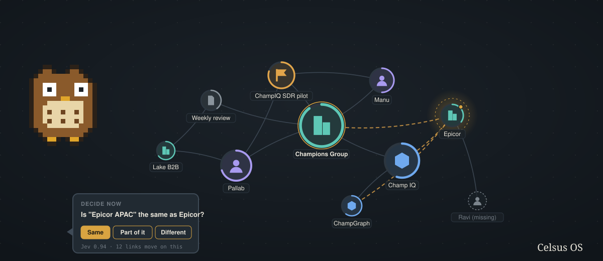

Celsus reads your vault, maps it as a living graph, and turns the mess (drifting names, duplicate notes, links you never drew, people with no note) into short questions you answer with one key. It learns how you decide, so it asks less over time. A pixel owl does the asking, and answers yours in small interface blocks instead of paragraphs.

curl -fsSL https://raw.githubusercontent.com/Champ-Deep/celsus-os/main/install.sh | shmacOS or Linux, git, Node 22.18 or newer, and an OpenRouter key. Zero dependencies; nothing is installed beyond the app folder in ~/.celsus-os.
Only names and titles leave your machine, for the classifier. Note bodies never do. Your key lives outside the vault. Every run writes into a dated folder inside the vault, and the app itself only writes three things there: notes you save, the policy note, and archive moves. Nothing is ever deleted from disk.
The vault becomes a graph. Size is how linked a note is, the ring is how complete it is, the icon is what kind of thing it is, and a halo means a decision is waiting. Click a node and the owl tells you what it is connected to and what is pending. Ask anything.
GraphEvery mention resolves to one canonical note (misspellings, initials, aliases), with Jev judging the ambiguous ones. Pairs of notes that never link but should are surfaced, and efforts get their owner suggested.
Graph · DecideEvery open question is a flashcard: one at a time, keys 1 to 4, the recommended answer filled when Jev is confident, one line on why you are seeing it. Duplicates archive with one click and restore with one more.
Decide · DuplicatesThings linked from everywhere with no note, ranked by links. Two lines from you, then Laya drafts the note from your template and links what it recognises, Jev checks it is complete, you fill the gaps and save.
Missing notesEach answer updates a rule store keyed by the shape of the question. Five consistent answers at 0.90 confidence and the rule decides on its own, with undo. The store is rewritten as a readable note in your vault, Decision Policy.md, and its standing rules are briefed to the classifier before it decides anything, so it is told how you decide first.
The same store trains Laya, the local writing model: a system prompt, a chat format training set, and an Ollama Modelfile, regenerated after every answer. One command refreshes the local model, and the narrator then runs entirely on your machine.